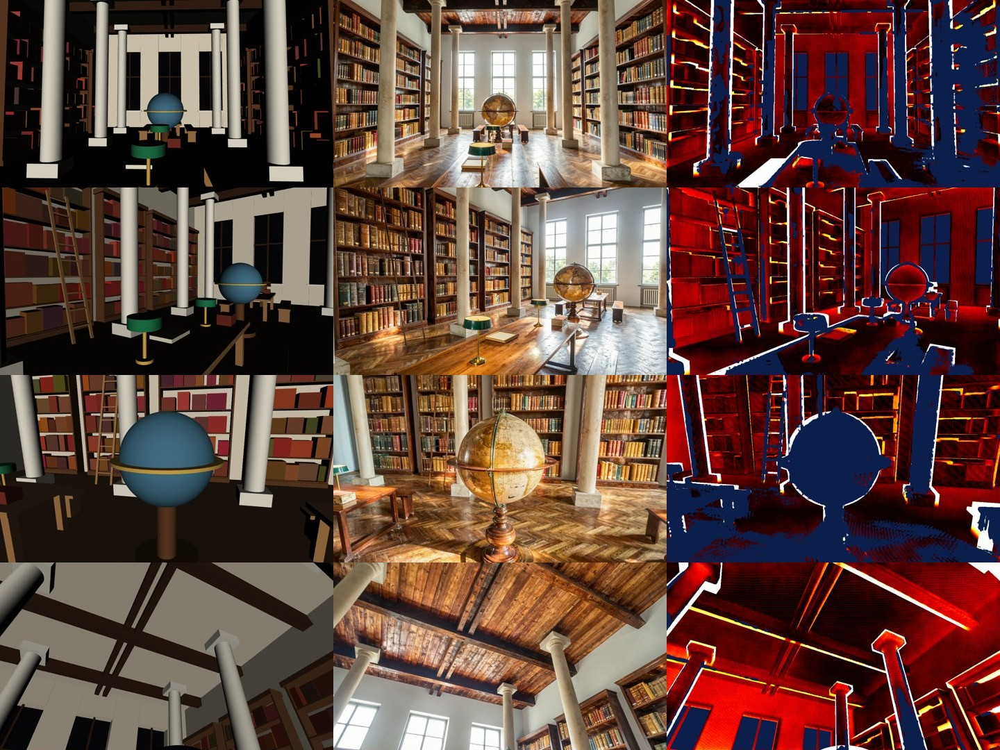
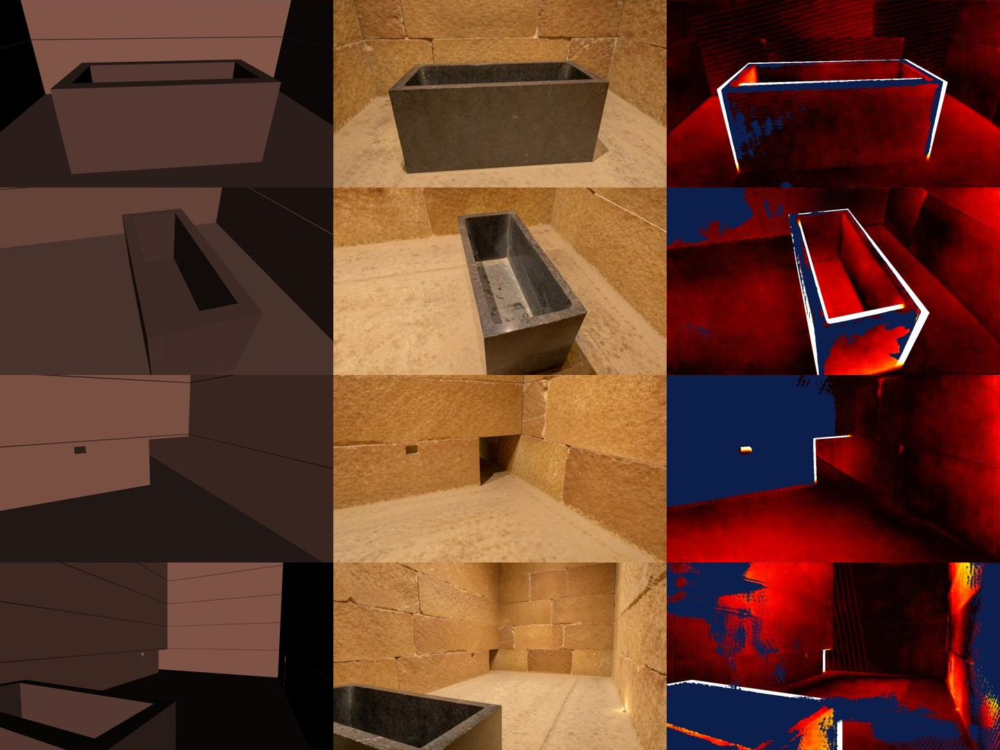
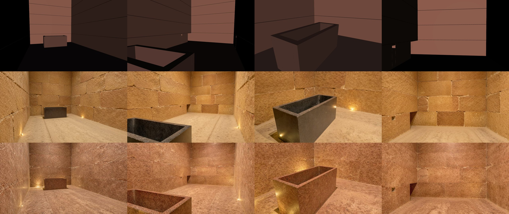
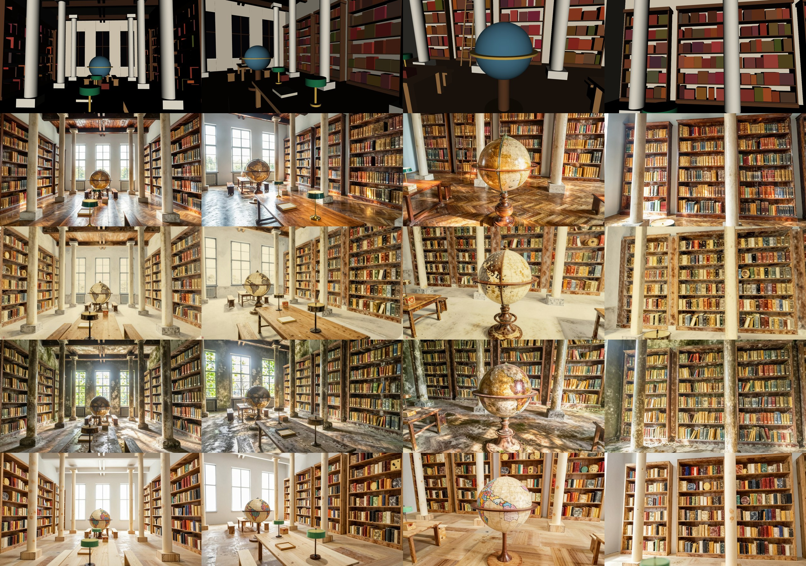
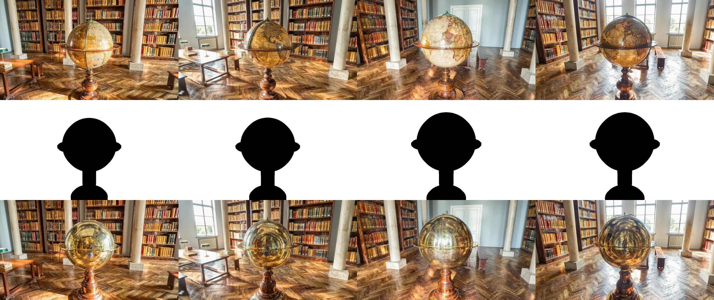
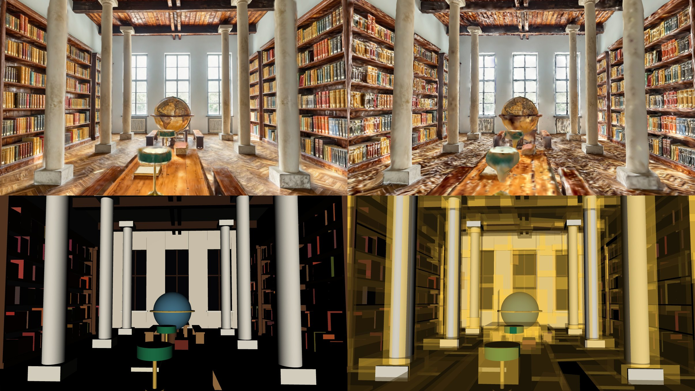
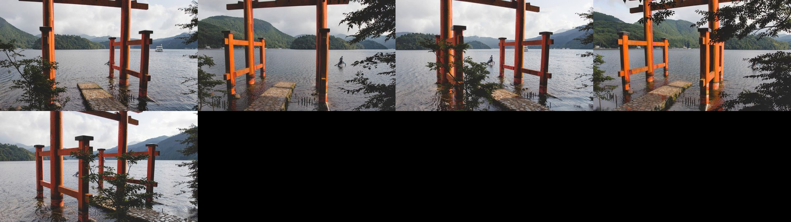

Atlas Bridge: an X3D world goes to World Labs Atlas and comes back as X3D
A scene graph of plain boxes, cylinders and one sphere is sent to Atlas as cameras and exact depth. Atlas paints it. The pictures, the Gaussian splats, the mesh and the collider boxes come home into one X3D 4.1 file, and the X3D to three.js bridge draws it. Every step is measured against the X3D it started from.
Live · the return world, drawn by the X3D to three.js bridgeWalk the room Atlas painted on the X3D blockout
World
loading
Loading the bridge
Layers
Viewpoints
Drag to look, W A S D or the arrow keys to move, Q E down and up, wheel to step forward. With Collide on, the boxes Atlas fitted (the X3D Collision proxy) stop you. The splats are a GaussianSplats node; its MetadataString splatFile names the dense SPZ, drawn by Spark 2.4.0 inside the bridge. Everything on screen is read from the X3D file.
Out · X3D to AtlasCameras and depth out, pictures and depth back
Each X3D Viewpoint becomes an Atlas pinhole camera (same axes, rub). The bridge renders planar depth of its own meshes into a float target, and that goes up as a linear EXR. Atlas Chisel returns a picture per camera and its own depth, which is held against the depth that was sent.

Reading room, first ring. Left: the X3D bridge render. Middle: Atlas Chisel, same camera. Right: Atlas depth against X3D depth (dark red is close, yellow and white are far off, blue is no depth returned).

King's Chamber, dimensions after Petrie (1883). The first prompt asked for red granite and got yellow limestone; a granite-first prompt on the same depth fixed it (below).

Same X3D depth, second prompt. The geometry does not move; only the paint does.
Control · the scene graph is the handleOne geometry, many looks; one node, one edit

Rows: X3D bridge, photograph, ink wash, ruin, handmade miniature. Four cameras each. The layout holds in every row. Finding: with depth on every frame the model stays close to a photograph; the ink-wash prompt came back as a pale photo, not a painting.

Top: Atlas views. Middle: the mask, made from the X3D ray cast of the four nodes whose DEF starts with Globe. Bottom: Chisel repaints only there (a brass armillary sphere).
Back · Atlas to X3DSplats, mesh and colliders, held against the X3D solids
The splats are built from Atlas pictures plus the X3D depth and cameras, so the geometry stays the X3D's. The return file holds Atlas cameras as Viewpoint, splats as GaussianSplats, the mesh as IndexedTriangleSet with its texture, and the collider boxes as a Collision proxy.

The same X3D file, four layers, same Viewpoint, drawn by the bridge.

The other direction with no X3D to start from: one photograph (Pexels, see attribution) is posed by Atlas, eight new cameras are written first as X3D Viewpoints, and Atlas generates the views. Finding: the views disagree in places (a paddler appears in some).
Ledger · every paid callWhat the credits bought
Findings · the tetherWhat broke, what was measured, what is still a guess
Rights and credit. Pictures, splats, meshes and collider boxes on this page were generated by World Labs Atlas on Developer signup credits. Under the World Labs terms for that tier, World Labs owns those outputs and licenses them for personal, non-commercial use; they are shown here on that basis and are not offered under this repository's licence. The X3D worlds, the kit and the measurements are the author's. Takedown: open an issue on hagopjay/x3d.demo and the material comes down at once. Full list in DATA-ATTRIBUTION.md.